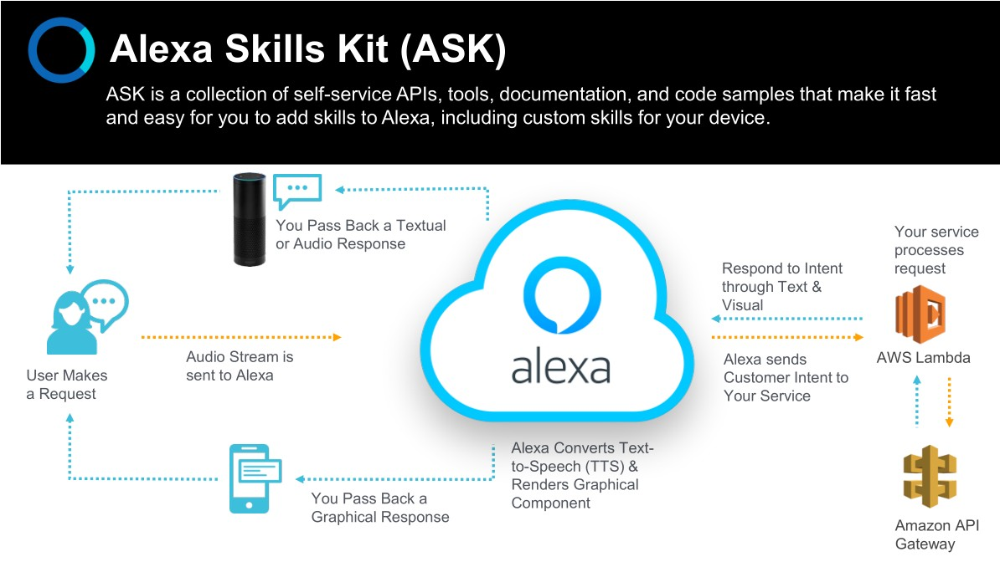
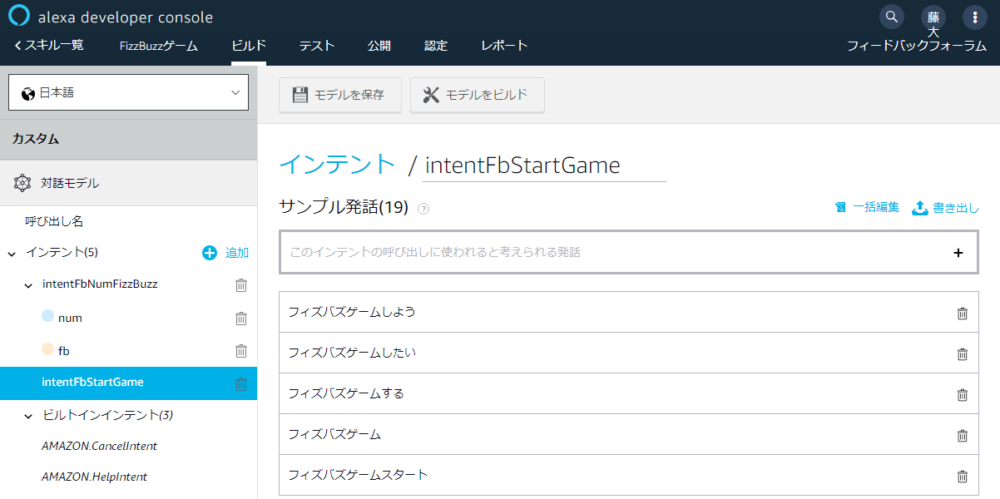
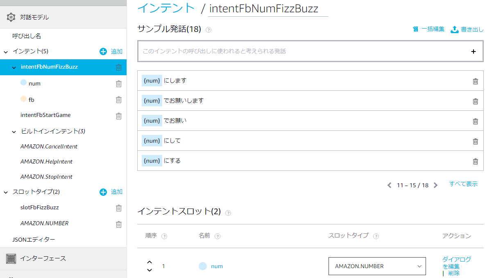
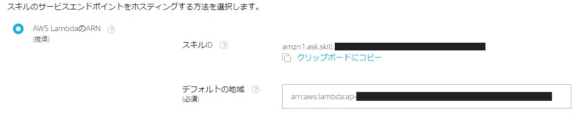
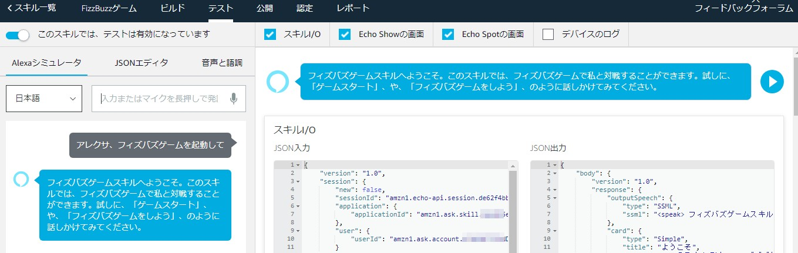
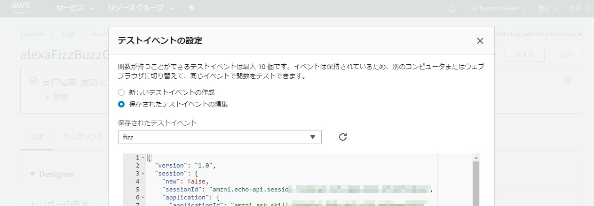
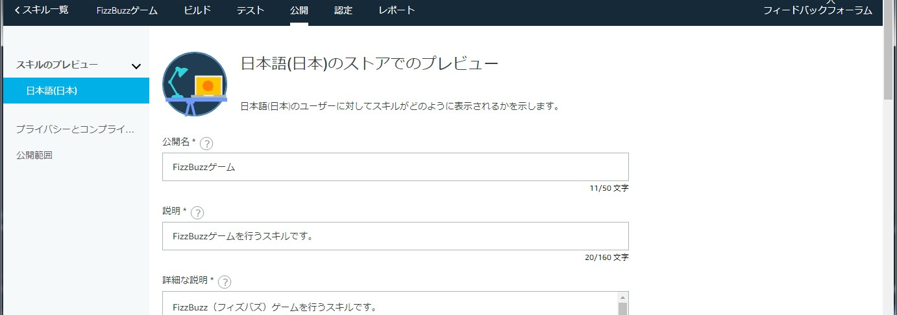
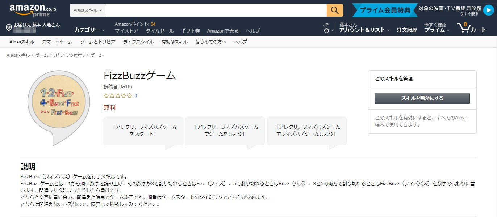
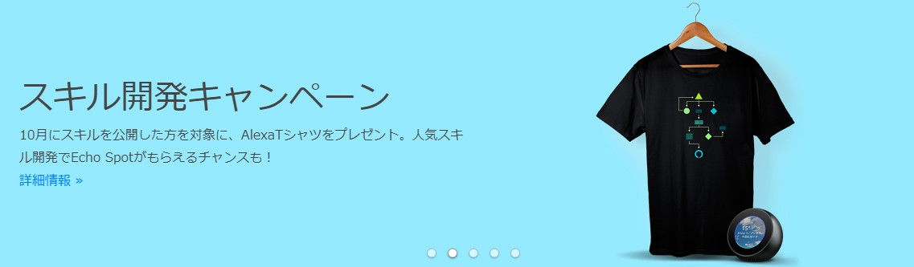
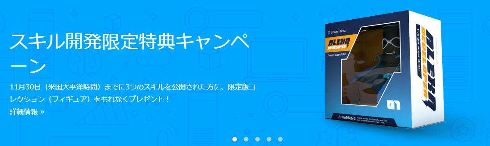

Alexaのスキルを作ってみた
2018/10/27 E2F
本日の資料
https://da1fujimoto.github.io/presen/181027_e2f8_alexa_skill/
pdf化する場合は?print-pdfをつけてブラウザの印刷ダイアログから
ながれ
- About Me
- Alexaとは
-
スキル作成
- ASK
- エンドポイント(AWS Lambda)
- テスト・デバッグ
- リリース・審査
About Me
- 藤本 大地
- やっていること
- ファームウェア(2005-2017)
- AI, インフラ, フロントエンド(2017-)
- 興味
- 工作（電子・非電子問わず）
- アウトドア
- AI, クラウド, Python, JavaScript
Alexaとは
クラウドベースの音声サービス
- 機械学習
- 自動音声認識
- 自然言語理解
- 音声合成
Alexaとは

クラウド側の機能は自作できる → スキル
ASK

ASK
対話モデルを定義してエンドポイント（e.g. AWS Lambda）とを橋渡し
発話内容をどういう風に解釈するかを設計。但し、応答は設計しない

インテントとスロット（ASK）
それぞれ以下のようなもの
- インテント：コマンド・イベント
- スロット：変数

エンドポイント（ASK）
エンドポイントはAWS Lambdaである必要はないが、簡単に設定できるようになっている

エンドポイント（AWS Lambda）
Node.js, Pythonを使用して実装可能。ASKで記述しなかった応答処理（ロジック）をここで実装
API Gateway※の設定も不要でカンタン。DynamoDB, S3など他のAWS機能とも連携可能
※ API Gateway: AWS Lambdaに外からHTTPでアクセスする際にPOST/GETなどのルールを定義する機能
テスト・デバッグ
JSONを使ったデバッグ機能がASK, Lambda両方に用意されているのでそれらを駆使して意図した動作になっているかを確認する
ここまで出来れば自分のEchoでスキルを利用可能になっている
ASK

Lambda

テスト・デバッグ
誰でも使えるスキルにするにはAmazonの審査を受ける必要がある
スキルの説明やアイコンを作成し、審査に通す
審査員とのやり取りの末、スキル公開へ！

やったぜ

何かもらえる


参考・リンク集
Alexa道場はAmazon公式ウェビナー。これ見ただけで作れます
私の作ったスキルのコードや審査時の資料はGitHubに置いてます
Fin